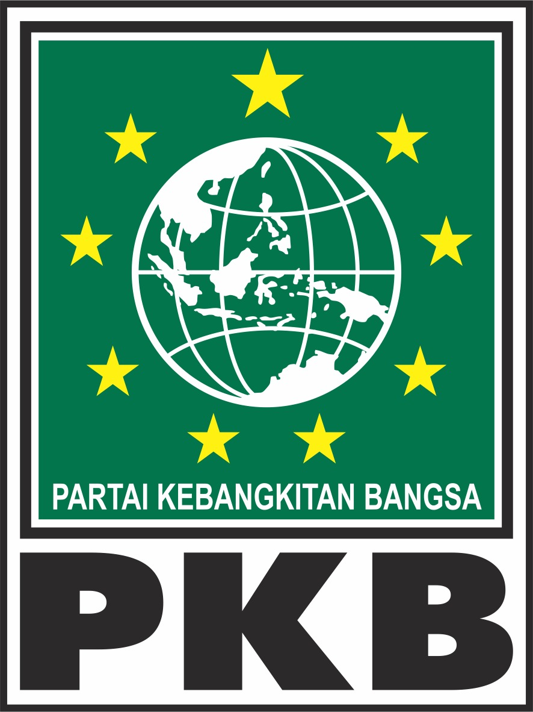
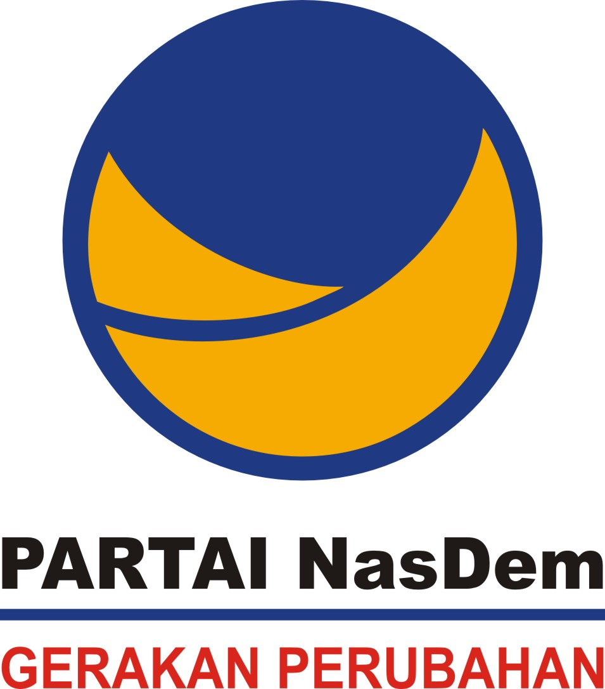
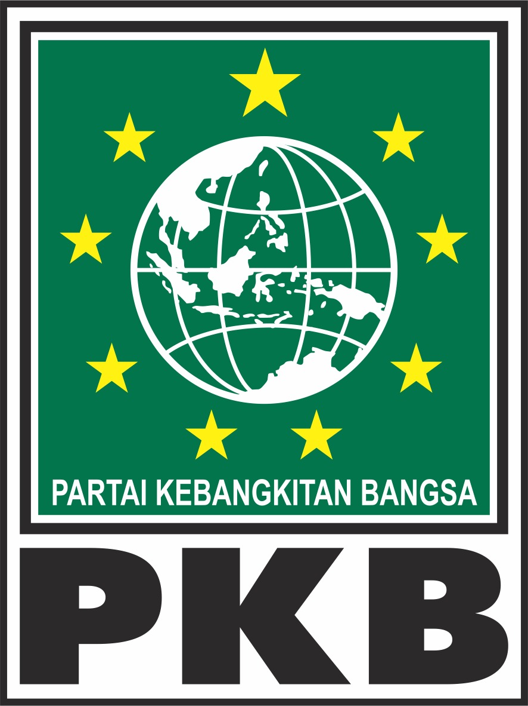
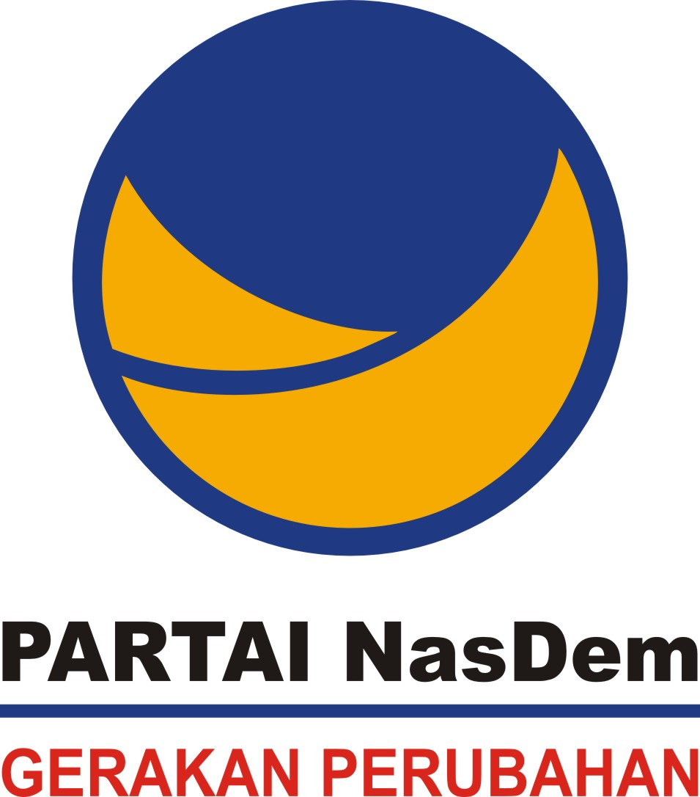
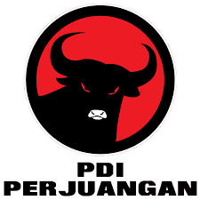
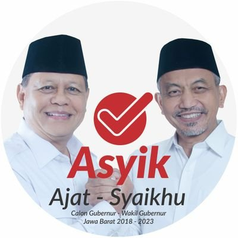
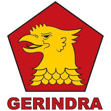
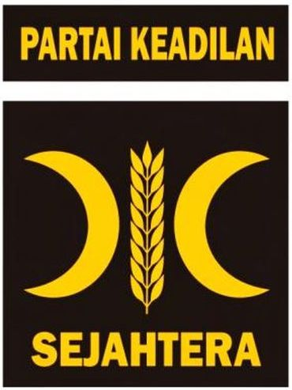
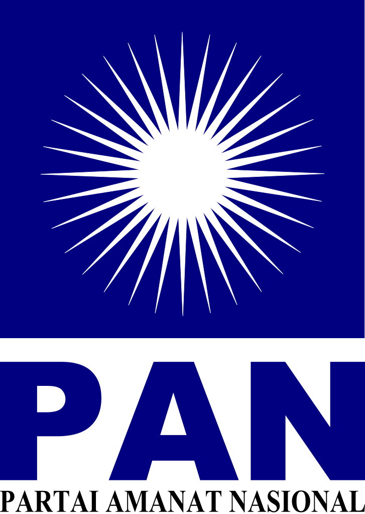

Visi
Menghadirkan Jawa Barat JUARAMisi
Membentuk manusia beriman, berkualitas, dan produktifMembangun infrastruktur
Mewujudkan tata kelola pemerintahan yang baik
Pengalaman Kandidat Sebelumnya
M Ridwan Kamil (Non-Partai) - Walikota Bandung (2013-2018)Uu Ruzhanul Ulum (Kader PPP) - Bupati Tasikmalaya (2011-2021)
Partai Politik Pengusung
 




Jumlah Kursi DPRD
24/100
Visi
Terwujudnya Jawa Barat yang makmur berbasiskan sumber daya alam dan budayaMisi
Menjadikan manusia bersumber daya, berdaya saing berbasis nilai agama dan budayaPembangunan infrastruktur
Jabar sebagai sumber pangan daerah dan nasional
Pengalaman Kandidat Sebelumnya
Tubagus Hasanudin (Kader PDI-P) - Wakil Ketua Komisi 1 DPR (2014-2018)Anton Charliyan (Non-Partai) - Kapolda Jawa Barat (2016-2017)
Partai Politik Pengusung
Jumlah Kursi DPRD
20/100

Meningkatkan kesejahteraan
Meningkatkan infrastruktur
Tata kelola pemerintahan yang profesional
Ahmad Syaikhu (Kader PKS) - Wakil Walikota Bekasi (2013-2018)
Visi
Jawa Barat termaju, bertakwa, aman dan sejahtera untuk semuaMisi
Membangun manusia agamis, sehat, unggul, gotong royong, toleran, dan harmoniMeningkatkan kesejahteraan
Meningkatkan infrastruktur
Tata kelola pemerintahan yang profesional
Pengalaman Kandidat Sebelumnya
Sudrajat (Kader Partai Gerindra) - Purnawirawan TNI-AD (2005)Ahmad Syaikhu (Kader PKS) - Wakil Walikota Bekasi (2013-2018)
Partai Politik Pengusung
  Jumlah Kursi DPRD
27/100
Visi
Terwujudnya Jawa Barat yang adil, sejahtera, dan berkarakter tahun 2023Misi
Membentuk manusia beriman, berkualitas, dan produktifMembangun infrastruktur
Mewujudkan tata kelola pemerintahan yang baik
Pengalaman Kandidat Sebelumnya
Deddy Mizwar (Kader Partai Demokrat) - Wakil Gubernur Jawa Barat (2013-2018)Dedi Mulyadi (Kader Partai Golkar) - Bupati Purwakarta (2008-2018)